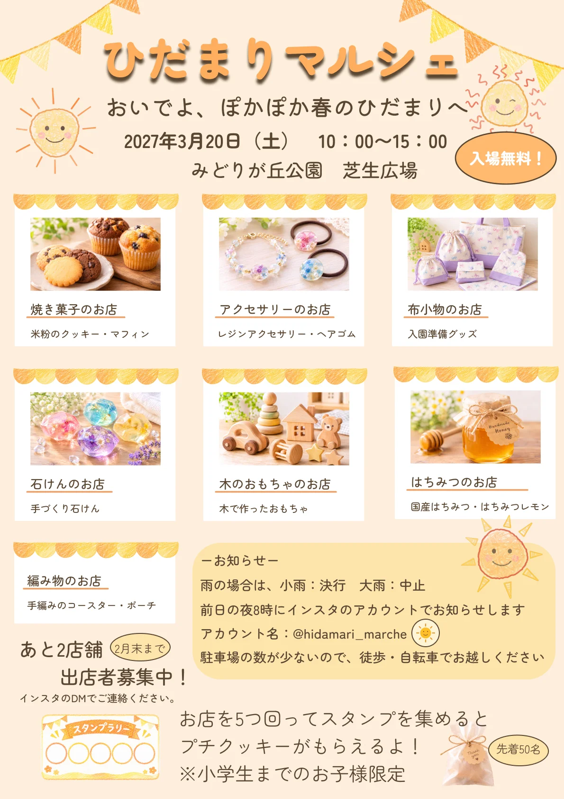
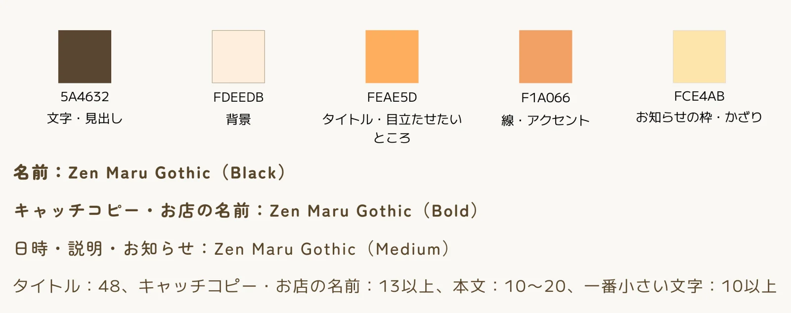
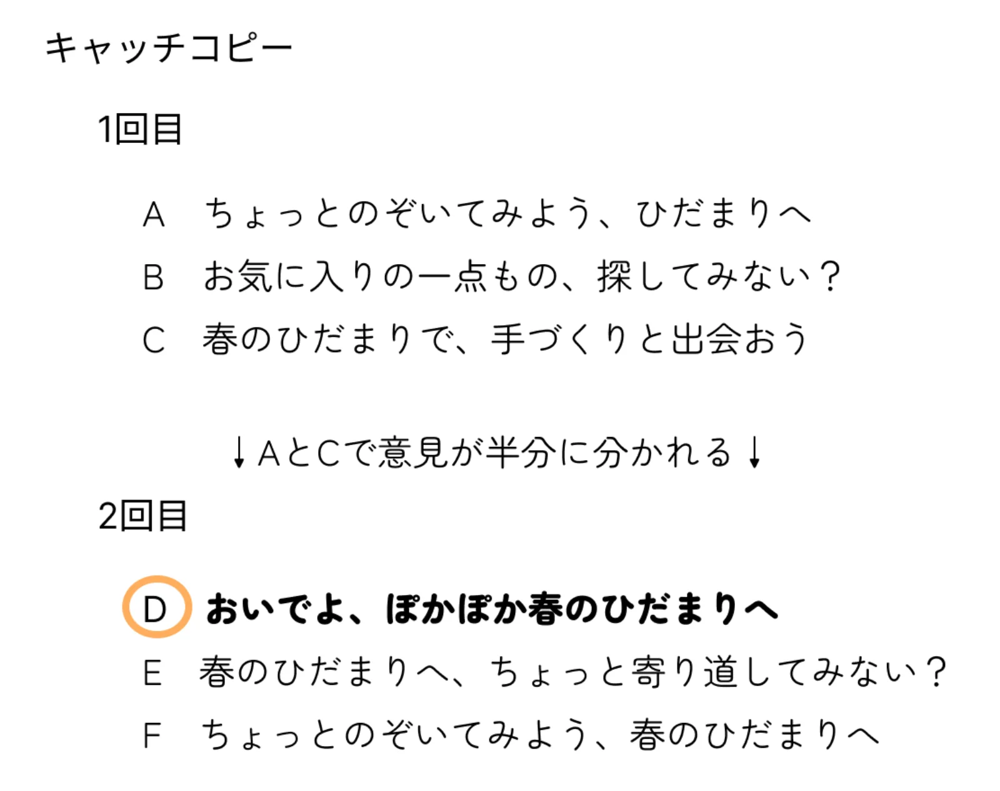

ひだまりマルシェ（架空の手づくりマルシェのチラシ）
#チラシ
※ 架空のイベントです。お客様とのやりとりは、AIにお客様役をしてもらう練習として行いました。商品写真は画像生成AI、お日さまのイラストはAI（Claude）で作ったイメージです。
- 対応内容
- ヒアリング・見積もり・キャッチコピー・チラシデザイン・修正（2回）・入稿データ作成
- 制作期間
- 2026年11月4日〜11月10日（作業時間 約6.6時間）
- 使用ツール
- Figma／Googleスプレッドシート（見積もり・書類の管理）／ChatGPT（画像生成）
- サイズ
- A4・縦・片面（印刷用の入稿データまで作成）

制作要件
ポートフォリオ用に制作した、架空の手づくりマルシェ「ひだまりマルシェ」の告知チラシです。お客様役とのヒアリングから、見積もり・修正・印刷用データの納品まで、実際の仕事と同じ流れで制作しました。ゴールは、マルシェに来てもらうことと、あと少しの出店者さんを集めることの2つを、1枚で伝えることです。
- ターゲット：幼稚園〜小学校低学年の子どもがいる家族（公園の近くに住み、歩きや自転車で来られる方）
- 見るとき：幼稚園のおたより・小学校で配られたチラシ、スーパーやカフェの掲示板
- ご要望：あったかくて、ほっこりする雰囲気／黄色やオレンジ／子どもたちが描いたお日さまの絵を入れたい
- ご予算：印刷代こみで1万円（モニター価格でお受けしました）
情報設計
「来てほしい」と「出店者募集」の2つを伝えるため、見てほしい順番を決めてから並べました。
- マルシェの名前・キャッチコピー：みんなで考えた名前を、いちばん大きく見せる
- 日にち・時間・場所・入場無料：行くかどうかを決めるために必要なことを、すぐ下にまとめる
- お店の紹介：写真に屋根のふちをつけたカードで、どんなお店が並ぶのかを伝える
- 出店者募集：しめきりのマークをつけて、お店のカードのとなりに置く
- お知らせ・スタンプラリー：雨の日・駐車場・インスタは枠にまとめ、子ども向けのスタンプラリーは枠の外で楽しく見せる
デザインコンセプト
「ひだまり」という名前から、「春の公園に、手づくりのお店がずらっと並ぶ」様子をテーマにしました。お店の写真に屋根のふちをつけ、クレヨンで描いたお日さまとガーランドをちりばめています。
色は、こげ茶・クリーム・オレンジ・うすいオレンジ・うす黄色の5色です。フォントは Zen Maru Gothic にしぼり、名前は Black、キャッチコピーとお店の名前は Bold、日時やお知らせは Medium で使い分けました。

キャッチコピー
「あったかくて、ほっこりする」「ちょっとのぞいてみようかな」というご要望から、3案をご提案しました。
メンバーの意見が2つの案で半分に分かれたため、両方のよいところ（気軽さと春らしさ）を合わせた案を作り直し、「おいでよ、ぽかぽか春のひだまりへ」に決まりました。

修正とやりとり
- 修正1回目：「入場無料」を目立つマークで追加／新しく決まったはちみつのお店を追加／スタンプラリーに「先着50名・小学生まで」を追加／タイトルの色を明るく
- 修正2回目：はちみつのお店と、編み物のお店の説明文を変更
- 小学校での配布のしめきりに間に合わないことがわかったため、修正の回数はへらさずに、全体の日程を早める形でご提案しました
デザインの工夫
- 写真の背景や色がバラバラだったため、同じ屋根つきのカードに入れて、全体をそろえました
- フォントを1つにしぼり、太さで「目立たせる文字」と「読ませる文字」を分けました
- チラシ立てに入れたときにも名前が見えるよう、A4縦の上のほうに名前を大きく置きました
- 印刷用に塗り足しと文字の安全な範囲を決めて、文字が切れないようにしました
振り返り・今後の改善
作業時間をタイムトラッカーで記録しました（ヒアリング0.9時間／デザイン3.2時間／修正0.75時間／入稿データ0.4時間／書類・やりとり1.35時間）。前回より、ヒアリングと入稿データの時間が短くなりました。
- 写真の数が多いと時間がかかるため、料金表に「写真5点まで」と追加料金を決めました
- 入場料など、ヒアリングで聞きもれたことを、ヒアリングシートに足しました
- わからないことはチラシに書かず、お客様に確認してから入れるようにします